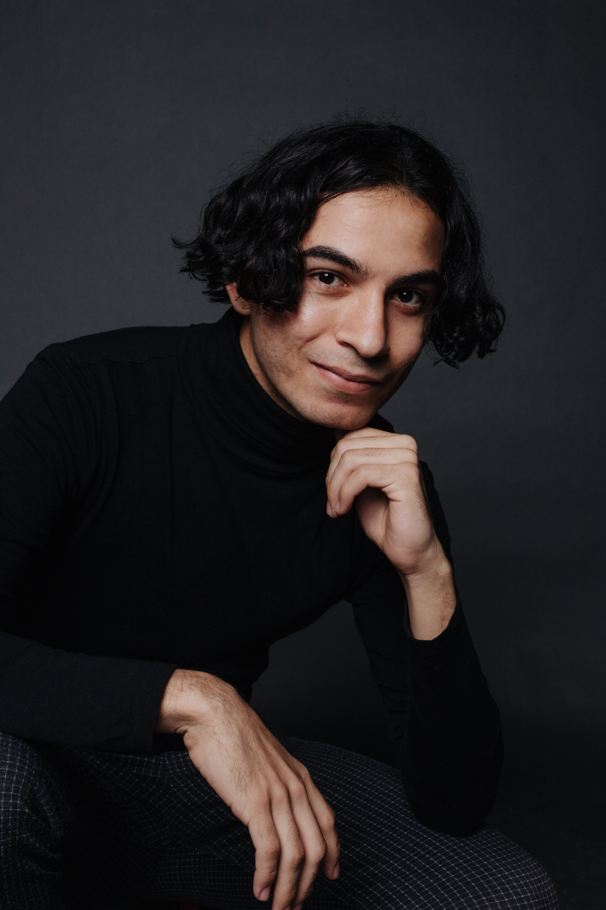
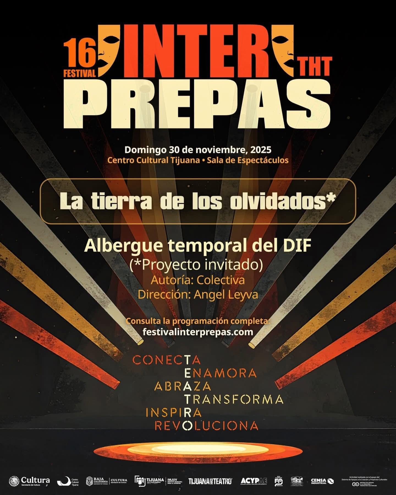
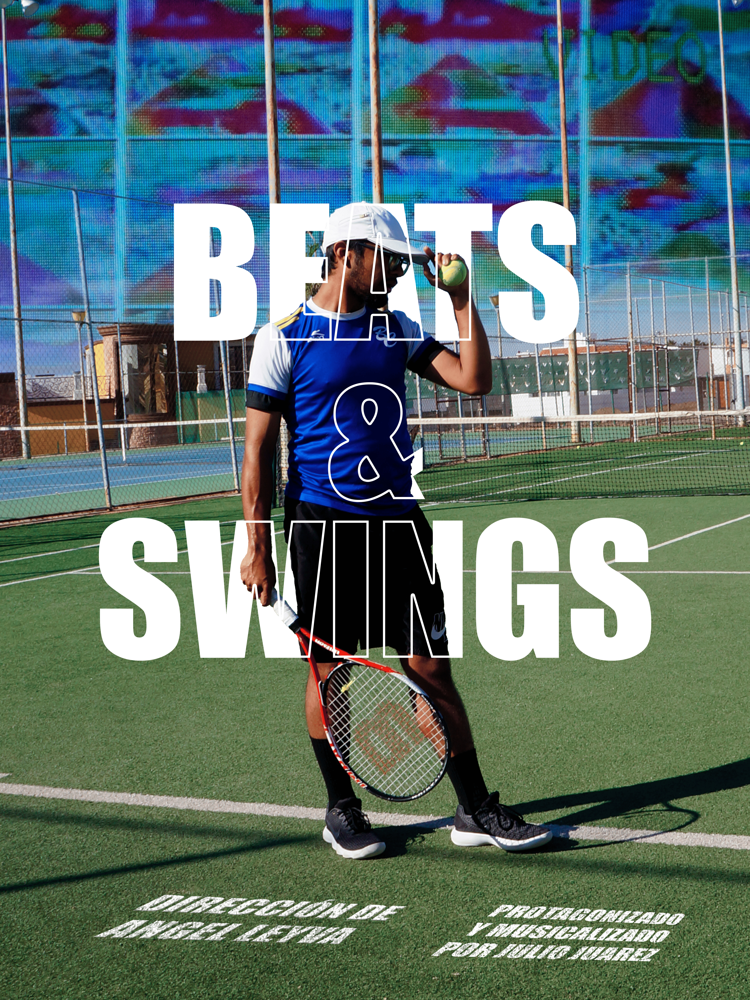
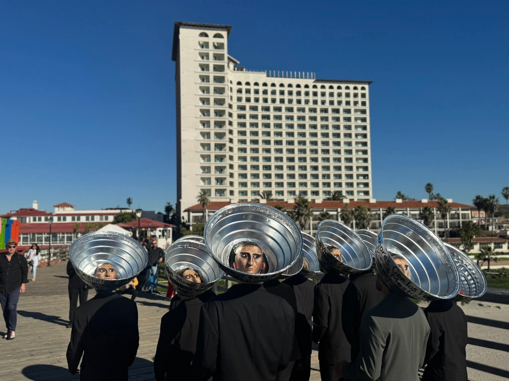
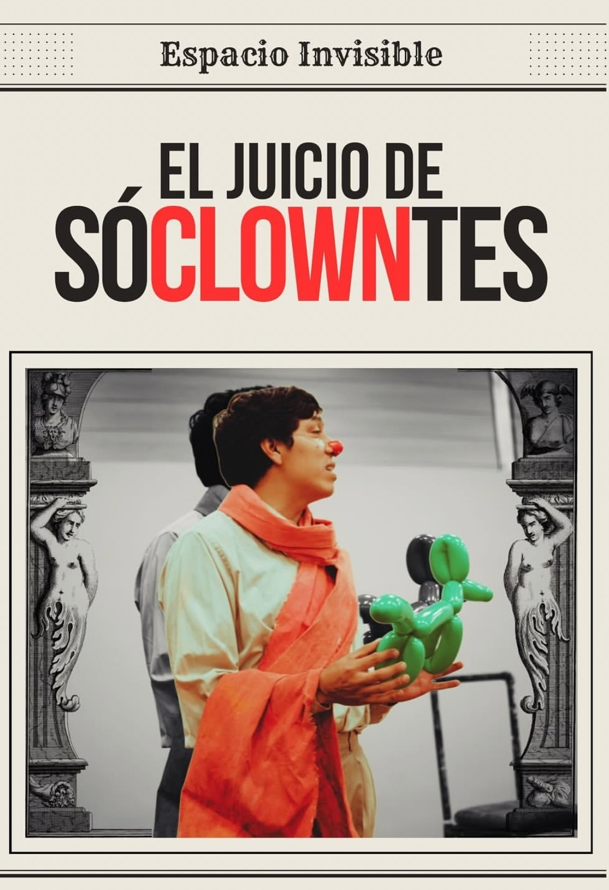
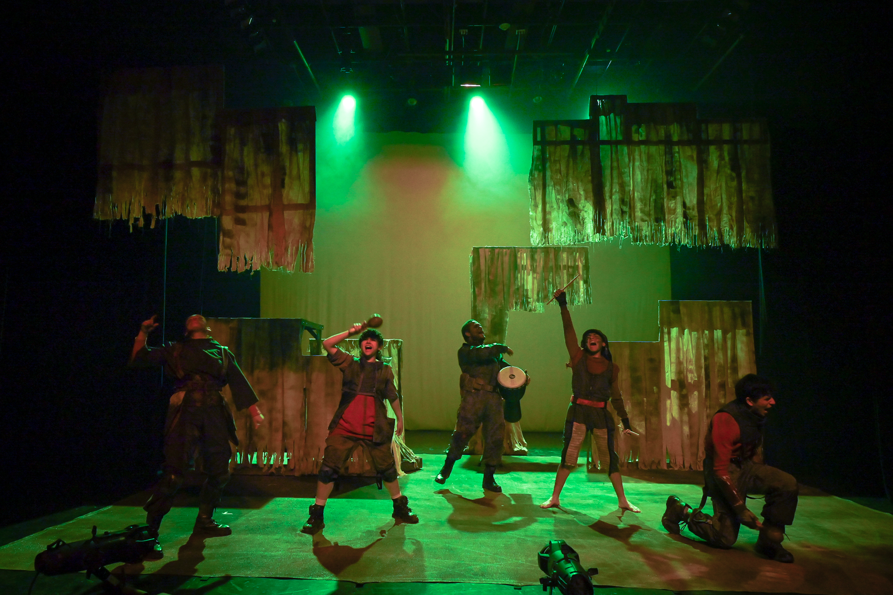
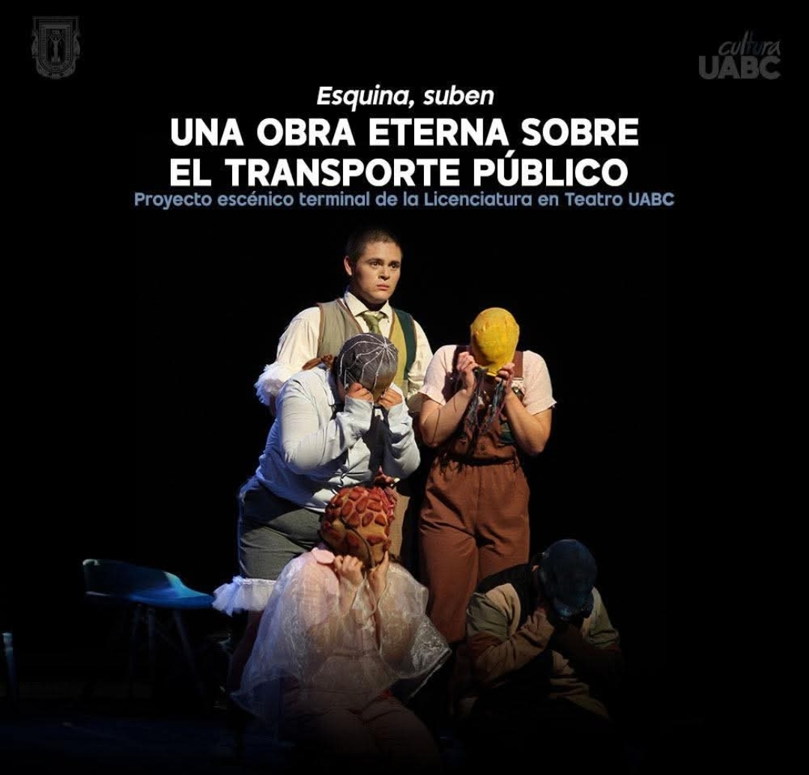

Portafolio 2025
Actor - Director - Productor Audiovisual - Gestor Cultural - Tallerista
Tijuana, BC, MX - San Diego, CA, EUA
Ver proyectos Contacto
6+
Años de práctica escénica
2
Países de colaboración
2025
Jóvenes a la Muestra, MNT
Ángel Leyva (Tijuana, Baja California, 2000) es actor, director escénico y artista comunitario de nacionalidad mexicana y estadounidense, con práctica arraigada en la frontera Tijuana–San Diego. Egresado de la Licenciatura en Teatro de la Universidad Autónoma de Baja California (2025), complementa su formación con estudios en producción audiovisual en el Media Arts Center San Diego y un laboratorio de clown con la Compañía Espacio Invisible.
Su trabajo atraviesa la dirección, el clown y la creación colectiva en contextos comunitarios. Ha colaborado con Foco al Aire Producciones en LosThe Ultramar, intervención escénica en espacio público con máscara, música y baile. En 2025 fue seleccionado para el programa Jóvenes a la Muestra de la Muestra Nacional de Teatro y su cortometraje Beats & Swings fue seleccionado en el San Diego Latino Film Festival.

2025 · Dirección
Director · Creación colectiva con niños
Montaje de creación colectiva con niñas y niños del Albergue Temporal DIF Tijuana. La pieza construyó un lenguaje escénico propio desde las vivencias de infancias en tránsito y vulnerabilidad social.

2024 · Cine documental
Director · Cortometraje documental
Cortometraje documental seleccionado en el San Diego Latino Film Festival 2025. Explora la cultura musical de la frontera Tijuana–San Diego desde una mirada íntima y territorial, fusionando la discplina artística y deportiva.
Ver corto ↗
2025 · Performance
Performer · Foco al Aire Producciones · Rosarito, BC
Intervención escénica en espacio público con máscara, música y baile. Una tribu posmoderna que dialoga con la arquitectura urbana y provoca en el transeúnte una experiencia de asombro colectivo y memoria corporal.
Ver proyecto ↗
2025 · Actuación
Actor · Compañía Espacio Invisible
Pieza de clown filosófico que reinterpreta el juicio de Sócrates como tragedia bufona. Producción de la Compañía Espacio Invisible.

2025 · Actuación
Actor · Teatro en Resistencia
Pieza de teatro que explora las vivencias y experiencias de las infancias en contextos de guerra de manera poética. Producción de la compañía Teatro en Resistencia.

2024 · Producción
Producción · Musicalización · UABC
Producción universitaria que aborda la cotidianidad urbana fronteriza con una partitura sonora original diseñada para la dramaturgia de la escena.
Tallerista
Talleres de teatro y expresión escénica en el Albergue Temporal DIF Tijuana (2025) y el CETIS 58 (2024). Sesiones lúdico-teatrales con grupos de niñas, niños y adolescentes, construyendo herramientas de expresión desde el cuerpo y el juego.
Tijuana, BC · 2024–2025
Circo comunitario
Colaboración con la compañía canadiense Caravanne Philanthrope en proyectos de circo social comunitario. Trabajo colaborativo que integra artes del circo, teatro físico y pedagogía de creación colectiva en espacios públicos y comunitarios.
Tijuana, BC · Colaboración internacional (Canadá)
Teatro comunitario
Sesiones lúdico-teatrales con grupos en condición de movilidad forzada, usando la escena como espacio de encuentro, dignificación y expresión colectiva en la frontera.
Tijuana, BC · 2023–2024
Gestión cultural
Servicio profesional en el departamento de Producción Escénica del CECUT: XXVIII Encuentro de Teatro de Tijuana y XVI Semana de Teatro para Niñas y Niños BC (2024). Apoyo en Encuentro Internacional "Infancia Territorio de Paz" (2020–2021).
CECUT · Tijuana, BC · 2020–2024
2025
Muestra Nacional de Teatro · México
2025
Selección oficial — Beats & Swings
2024
Encuentro de Teatro de Tijuana XXVIII
2024
Media Arts Center San Diego
2023
Compañía Espacio Invisible
2019–2025
Universidad Autónoma de Baja California
Disponible para proyectos de arte comunitario, residencias, talleres y colaboraciones escénicas en México, Estados Unidos y Latinoamérica.
Teléfono
+52 664 125 2952
Base
Tijuana, Baja California — México
Idiomas
Español · English